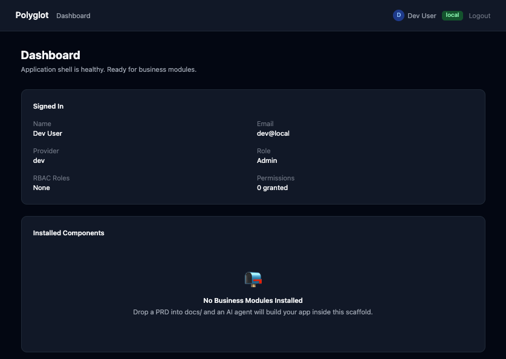
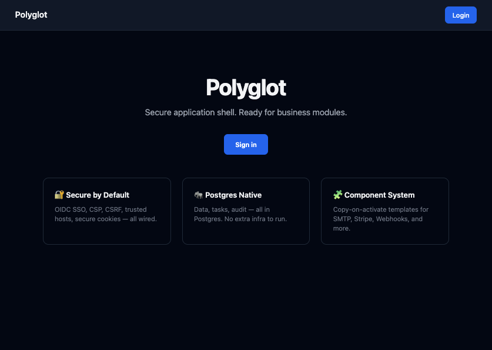
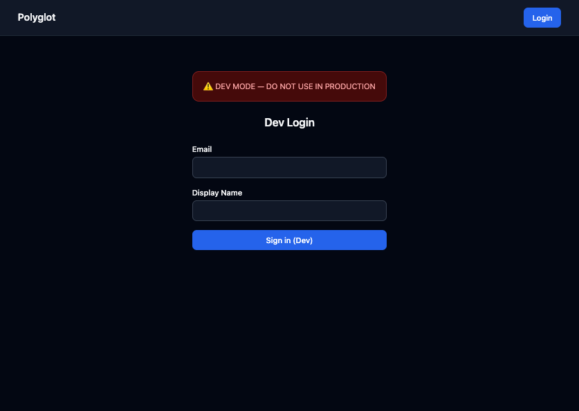

Polyglot¶
AI-native secure application boilerplate.
Clone it. Configure SSO + Postgres. Run Docker Compose. Log in. Then drop in a PRD and let an AI agent build your business app inside a hardened, well-documented scaffold.

What You Get¶
- FastAPI app with async SQLAlchemy, Alembic, Pydantic v2
- SSO — OIDC (4 providers) + SAML + dev login
- RBAC — roles, permissions,
require_permission()dependency - TOTP MFA — QR setup, challenge flow, backup codes
- Postgres — data, tasks (Procrastinate), audit logs, all in one DB
- Security — CSP, CSRF, HSTS, security headers, audit logging, RLS docs
- HTMX + Jinja2 default frontend, React + Vite alt
- 11 template packs — copy-on-activate: SMTP, Stripe, Webhooks, LDAP, etc.
- Docker Compose — app, worker, Postgres, optional profiles
Quick Start¶
cp .env.example .env
# Set SECRET_KEY, configure SSO or enable AUTH_DEV_MODE=true
docker compose up --build -d
docker compose exec app alembic upgrade head
Open http://localhost:8000.
Screenshots¶
| Home | Login | Dashboard |
|---|---|---|
 |
 |
Architecture¶
FastAPI + Postgres → Task Queue (Procrastinate) → Component System
├── OIDC / SAML / Dev Auth
├── RBAC (roles + permissions)
├── TOTP MFA (on login)
├── Audit logging (structured + DB)
└── 11 copy-on-activate templates
License¶
MIT